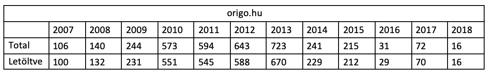

A fenti kutatási kérdést az Origo kapcsán vizsgálom meg. Az Origo körüli változások 2014 júniusában kezdődtek, amikor Sáling Gergő főszerkesztő távozott, és helyét Pálmai L. Ákos vette át. A főszerkesztőváltásra az országgyűlési választás után került sor, amikor megjelent a Lázár János külföldi hotelszámlájáról szóló cikk a portálon. Már innentől kezdve kevésbé volt a portál (a kormánypárt ráhatásával) kormánykritikus. 2015-ben a Telekom eladásra bocsájtotta az Origot, amit 2016 februárjában a New Wave Media Kft vett meg, az új tulajdonos Száraz István lett. 2017 áprilisa is fontos dátum a híroldal életében, ekkor többen távoznak az újságtól (feltehetőleg a politikai pozícióváltásnak köszönhetően), és ekkor szűnik meg az oldalon a kommentelési lehetőség is.
A kérdés, miszerint a tulajdonosváltás hatása kimutatható-e egy portál esetében az alábbi táblázat alapján is bizonyosságot nyerhet. A K-Monitor cikkgyűjteményébe 2016-tól kezdődően radikálisan kevesebb cikk került be, mint a tulajdonosváltás előtt (annak ellenére, hogy az elérési arány nem romlott).
Ha a portálon megjelenő topikok arányát vizsgáljuk a fenti ábra is alátámasztja a tulajdonosváltás befolyásoló erejét. Bár mindjét időszakban domináns az igazságszolgáltatás topik jelentősége, ám ez a tulajdonosváltás előtt csökkenő tendenciát mutat, a tulajdonosváltással viszont azonnal megugrik (magasabb szintre, mint ahonnan 2014-ben indult). Bár csak kicsit, de szintén növekszik a kormányzati és nem kormányzati szervek kapcsolatát feldolgozó topik, és a váltás után konstans marad. Figyelemre méltó még a közbeszerzések topik visszaesése is.